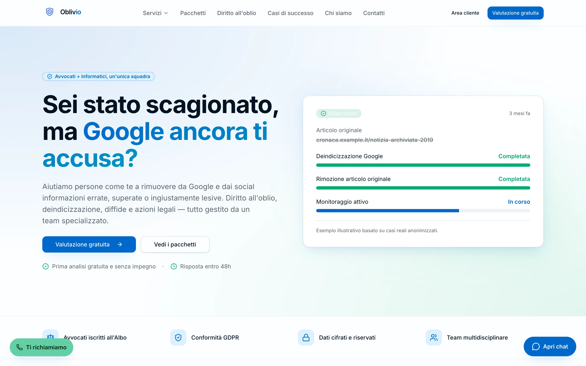

privacymasters.it
PrivacyMasters
Cybersecurity, privacy e conformità (GDPR, NIS2, DORA, AI Act), investigazioni, sicurezza fisica

bevolve.it
Evolve
System integrator di Rovigo: software, AI, cybersecurity, reti e ingegneria per imprese e PA

tuttoaltopiano.it
TuttoAltopiano
Guida indipendente all'Altopiano dei Sette Comuni (Asiago): sentieri, malghe, Grande Guerra, neve, con l'assistente Nando

oblivio.legal
Oblivio
Diritto all'oblio: rimozione da Google e social di informazioni errate, superate o lesive

medicleo.com
Medicleo
Sensore radar non invasivo per la sicurezza di anziani e persone fragili a casa